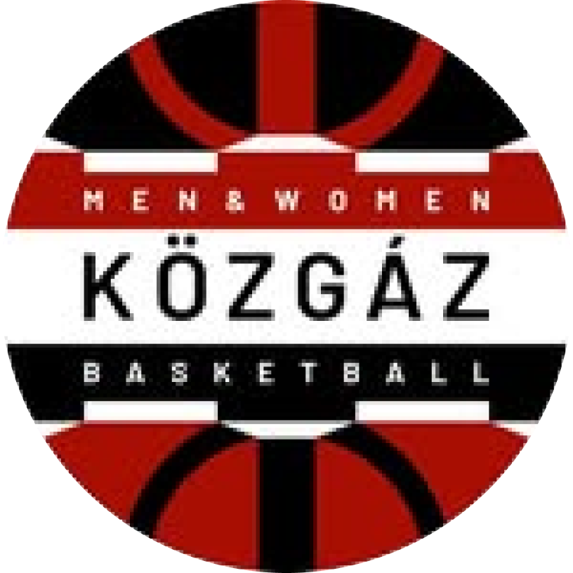

| H | Csapat | M | Gy | V | +/- | Pt |
|---|---|---|---|---|---|---|
| 1. | Pénzügyőr | 2 | 2 | 0 | +62 | 4 |
| 2. | BLF | 2 | 2 | 0 | +46 | 4 |
| 3. | Közgáz B | 2 | 1 | 1 | -6 | 3 |
| 4. | NYÍKSE | 2 | 1 | 1 | -23 | 3 |
| 5. | BKG | 2 | 1 | 1 | -22 | 3 |
| 6. | Szerencs | 3 | 1 | 2 | -1 | 4 |
| 7. | VBW | 3 | 1 | 2 | -40 | 4 |
| 8. | V.egyház | 2 | 0 | 2 | -16 | 2 |
| 9. | FKE | 0 | 0 | 0 | 0 | 0 |
https://www.kozgazkosar.hu/kozgaz-b.ics